先看页面：这一部分要做出什么
上学期的系统只知道仓库里有哪些格子：仓库 WH-001 下面有库位 A-01-01、A-01-02、B-01-01。这一部分让系统再记下两件事：
- 仓库里有哪些货。每一种货叫一个「货品」，用编码区分，比如
SKU-003是垫圈。 - 每次进了多少货、放进了哪个格子。这一步叫「入库」。
前端切到「第二部分」分支，左边菜单多了「货品」「入库」两页。下面先看这两页，再看这一部分要解决的两个问题。
货品页：登记有哪些货
上面三个框填编码、名称、单位，点「新建」，货品表 sku 里就多一行。中间的表列出已经登记的货品。最下面「接口返回」记着每点一次按钮后端回了什么：绿色 200 是成功，红色 400 是被拒绝，下面是后端回的原文。
重点一：同一个编码能不能登记两次。轴承 SKU-001 已经登记过了，在页面上再新建一次 SKU-001：
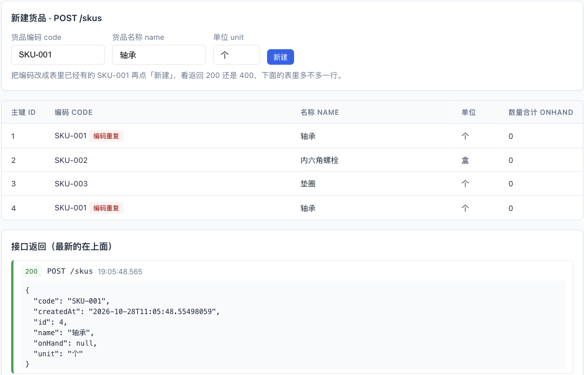
SKU-001，页面标出「编码重复」。以后入库选 SKU-001，系统只认第一行，第二行永远进不了货。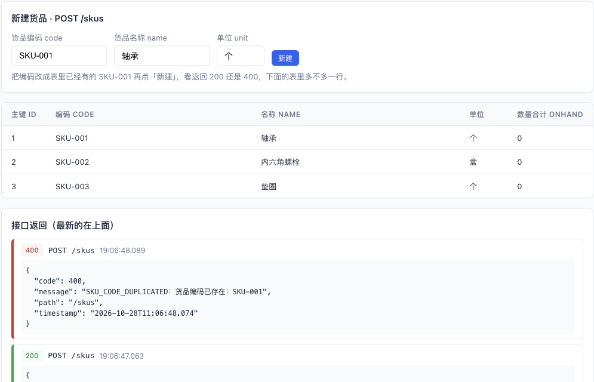
SKU-001。入库页：记下进了多少、放在哪
入库分三步：点「新建入库单」，得到一张空单，叫草稿；在单上选货品、选格子、填数量，点「加一行」；点「完成入库」，这批货才算进了仓库。页面上面列着建过的单，点哪一行就看哪一张；中间是选中的那一张单和它的每一行。
点「完成入库」时，数量要记到某个地方。系统里有两个地方可以记：
| 名字 | 在哪 | 记的是什么 |
|---|---|---|
on_hand | 货品表 sku 上的一列 | 这种货一共有多少个。一种货只有一个数，不分放在哪个格子 |
inventory | 这一部分新加的库存表 | 每个格子上、每种货各有多少个。一个格子上的一种货占一行 |
重点二：入库的数量记在哪。在页面上做两张入库单：IN-1 往 A-01-01 放 10 个垫圈，IN-2 往 A-01-02 放 8 个垫圈，都点「完成入库」。入库页下面「货品数量合计 on_hand」一栏会跟着刷新：
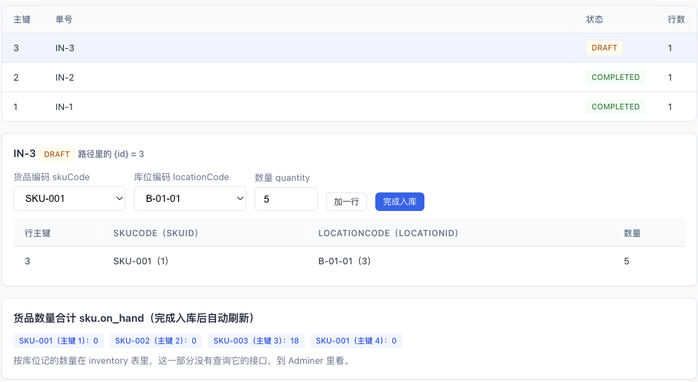
SKU-003 的 on_hand 变成 18：10 和 8 加在了一起。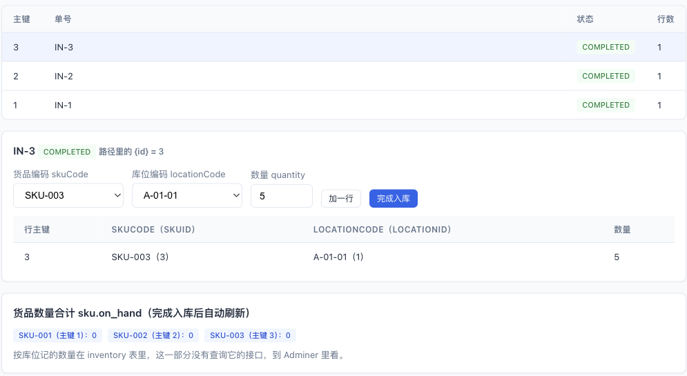
inventory。这一部分还没有查 inventory 的页面，到 Adminer 里看两张表：
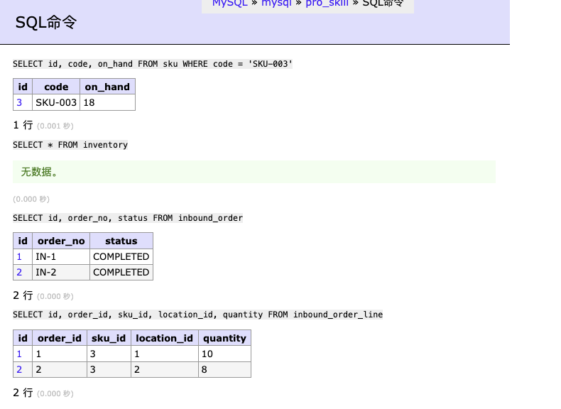
sku 表里 on_hand 是 18，inventory 没有数据。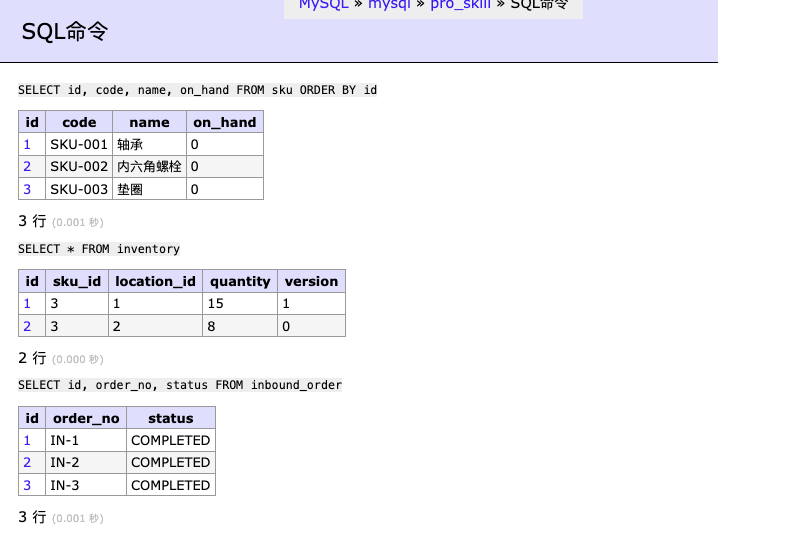
inventory 两行：location_id 1（A-01-01）上 15 个，location_id 2（A-01-02）上 8 个。图里多做了一张 IN-3，又往 A-01-01 放了 5 个，所以是 15。| 想知道的 | 第二部分能答出来吗 | 改良版能答出来吗 |
|---|---|---|
| 垫圈一共有多少 | 能：on_hand 是 18 | 能：把 inventory 里垫圈的几行加起来 |
| A-01-01 上有几个垫圈 | 不能，只有一个总数 | 能：inventory 里那一行 |
为什么一定要分格子：第三部分做出库，拣货的人要去某一个格子上拿货。只知道一共 18 个，系统说不出 A-01-01 上够不够拿。
这一部分要写什么
页面上这四个按钮，每个对应一个后端接口。这一部分照着讲义把它们写出来：
| 页面上点什么 | 调的接口 | 写到哪张表 | 讲义 |
|---|---|---|---|
| 货品页「新建」 | POST /skus | sku 加一行 | 第 5 节 |
| 入库页「新建入库单」 | POST /inbound-orders | inbound_order 加一行，状态是草稿 | 第 6 节 |
| 入库页「加一行」 | POST /inbound-orders/{id}/lines | inbound_order_line 加一行 | 第 7 节 |
| 入库页「完成入库」 | POST /inbound-orders/{id}/complete | 第二部分加在 sku.on_hand；改良版写进 inventory | 第 8 节 |
- 第 5–8 节：每个接口从 Controller 写到 Mapper，看清页面上填的每个字段最后落在哪张表的哪一列。
- 第 4 节：两个分支的代码一样，靠两个开关决定走哪一条路。
- 第 10–11 节：在页面和 Adminer 里，自己把上面两个重点查出来。
- 第 12 节：改良版改了哪两处。
前端怎么启动、实验每一步在页面上怎么点，见第 16 节。
1. 这一部分加了什么
上学期做完的「放在哪」：一个仓库下面有库区，库区下面有库位，库位是具体的格子。
WH-001 华东原料仓
A 区存储、B 区拣货
A-01-01、A-01-02、B-01-01
这一部分加五个接口：
| 接口 | 做什么 | 写到哪 |
|---|---|---|
GET /skus | 查全部货品 | 只读 |
POST /skus | 创建一种货品：编码、名称、单位 | sku 插入一行 |
POST /inbound-orders | 新建一张入库草稿 | inbound_order 插入一行，状态 DRAFT |
POST /inbound-orders/{id}/lines | 给草稿加一行：哪种货、进哪个格子、多少 | inbound_order_line 插入一行 |
POST /inbound-orders/{id}/complete | 完成入库，把数量记下来 | sku.on_hand 或 inventory；inbound_order.status 改成 COMPLETED |
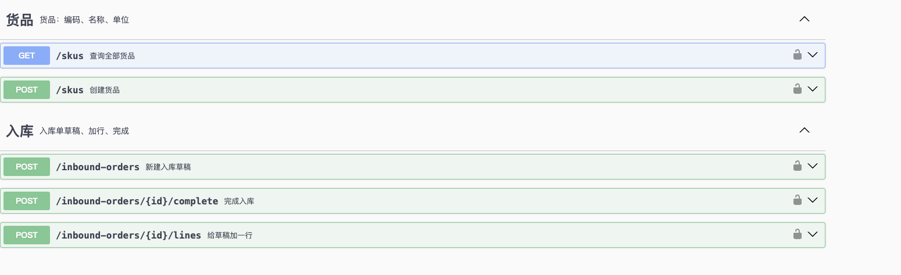
http://localhost:8080/swagger-ui.html，「货品」和「入库」两组就是这五个接口。先用「鉴权」组的 POST /auth/login 拿到 token，点右上角 Authorize 贴进去，这五个接口才能调用。课堂账号 admin，密码 Admin@123。2. 代码按哪几层放
仓库、库区、库位已经按这几层写好。货品和入库照这个加，不新发明一层。一条请求的方向：
接 HTTP，取字段
业务判断，组装一行
SQL
表的列
| 包 | 这一层做什么 | 货品看哪个 | 入库看哪个 |
|---|---|---|---|
controller | 接请求，返回结果，不写 SQL | SkuController | InboundController |
controller/request | 请求体里的字段和校验 | SkuCreateRequest | InboundLineRequest |
application | 业务 | SkuService | InboundService |
domain | 返回给页面的业务对象 | Sku | InboundOrder、InboundOrderLine |
entity | 和表的一行一一对应 | SkuEntity | InboundOrderEntity、InboundOrderLineEntity、InventoryEntity |
mapper | SQL | SkuMapper | InboundOrderMapper、InboundOrderLineMapper、InventoryMapper |
converter | entity 转 domain | SkuConverter | 写在 InboundService.toDomain 里 |
Controller 的传参方式和 UserController 相同：从请求体里把字段一个个取出来交给 Service，不在 Controller 里组装对象。
3. 用到的表
表由 Flyway 在应用启动时建好，脚本在 src/main/resources/db/migration，文件名前面的 V 几就是执行顺序。
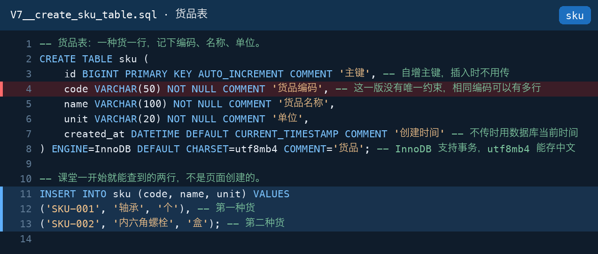
id 自增，插入时不传。第 4 行 code 只有 NOT NULL，没有唯一约束，同一个编码可以有很多行，这是漏洞一的来源。第 11–13 行启动时写入两种货：SKU-001 轴承、SKU-002 内六角螺栓。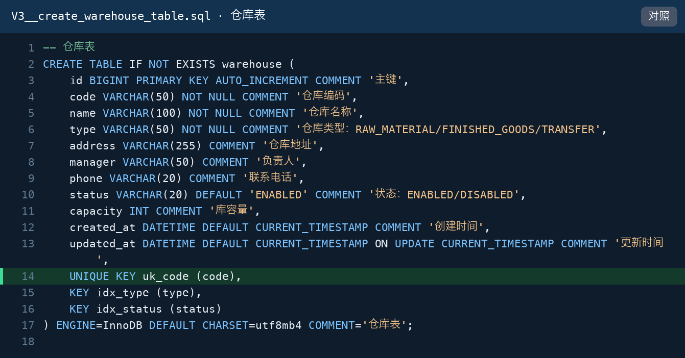
UNIQUE KEY uk_code (code)，同一个仓库编码只能有一行。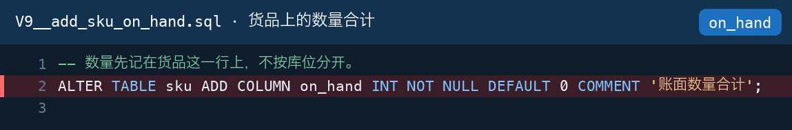
on_hand，一种货一个合计数。这一列里没有库位，是漏洞二的来源。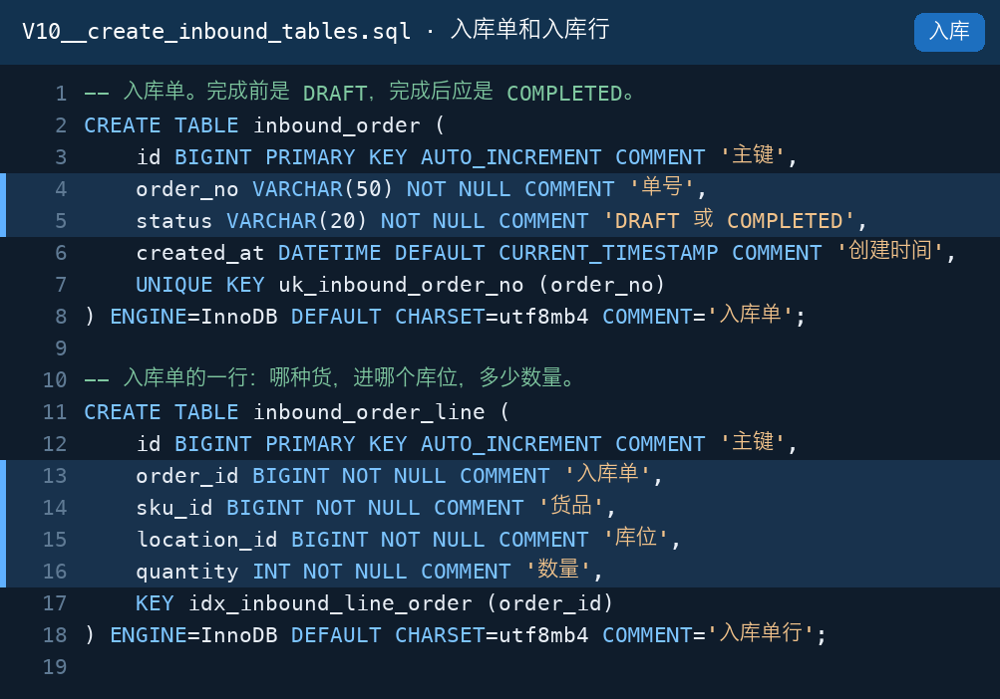
inbound_order：第 4 行单号，第 5 行状态 DRAFT 或 COMPLETED，第 7 行单号唯一。入库行 inbound_order_line：第 13–16 行记下属于哪张单、哪种货（货品主键）、哪个格子（库位主键）、多少。行上是有库位的。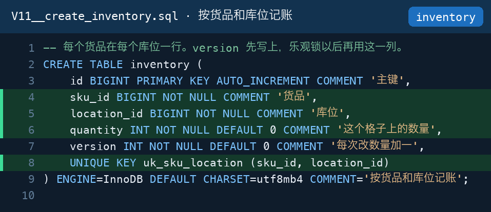
inventory：第 4–6 行货品、库位、数量，一种货在一个格子上一行。第 7 行 version 每改一次数量加一，第三部分的乐观锁用它。第 8 行唯一键是货品 + 库位，同一个格子上的同一种货不会有第二行。4. 开关怎样起作用
两个漏洞都由开关控制。一个开关的值走三步进到代码里：
app.lesson.sku-code-check: off
@Value 读成 boolean
if (lessonSwitches.skuCodeCheck())
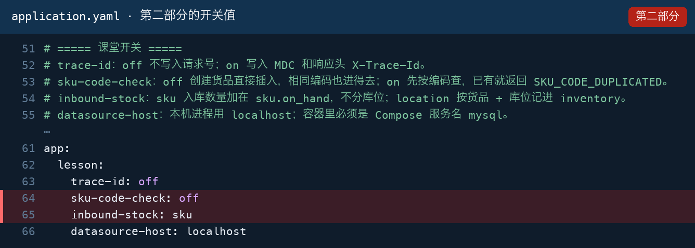
sku-code-check: off：创建货品不查编码。第 67 行 inbound-stock: sku：入库数量加在货品的 on_hand 上。两个都是漏洞那一侧。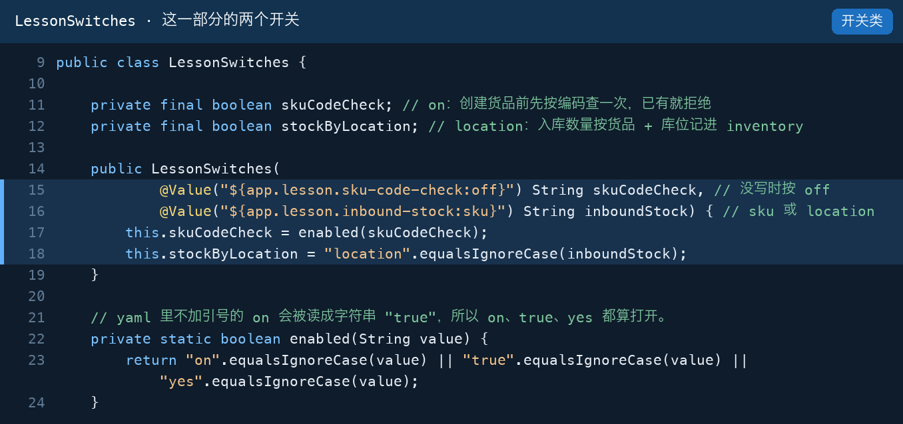
@Value("${app.lesson.xxx:默认值}") 把 yaml 里的字符串取进来，冒号后面是没写时的默认值。第 17 行把 on 变成 true。第 18 行：值是 location 时 stockByLocation 为 true，其它值都是 false。第 21–24 行：yaml 里不加引号的 on 会被读成字符串 "true"，所以 on、true、yes 都算打开。Service 构造时注入这个类。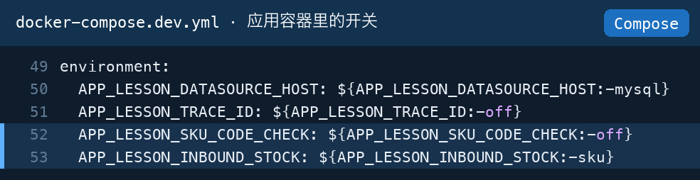
docker-compose.dev.yml 的环境变量盖过 yaml。Spring 把 APP_LESSON_SKU_CODE_CHECK 对应到 app.lesson.sku-code-check。${APP_LESSON_SKU_CODE_CHECK:-off} 的意思是：命令行没给这个变量就用 off。改开关有三种办法，改完都要重启应用：
| 怎样运行 | 怎样改 |
|---|---|
IDE 里运行 ProSkillApplication | 改 application.yaml 的值；或者在运行配置的 Program arguments 里写 --app.lesson.sku-code-check=on |
java -jar | 命令后面加 --app.lesson.sku-code-check=on --app.lesson.inbound-stock=location |
| Compose | APP_LESSON_SKU_CODE_CHECK=on APP_LESSON_INBOUND_STOCK=location docker compose -f docker-compose.dev.yml up -d --build --force-recreate app |
改良版上的值
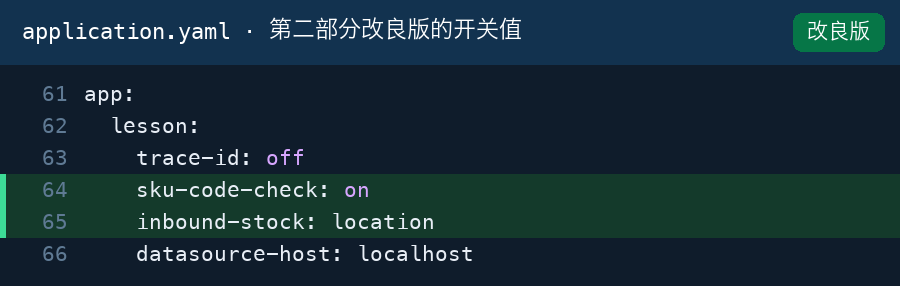
application.yaml，第 66–67 行是修好那一侧的值：on 和 location。其它行和第二部分相同。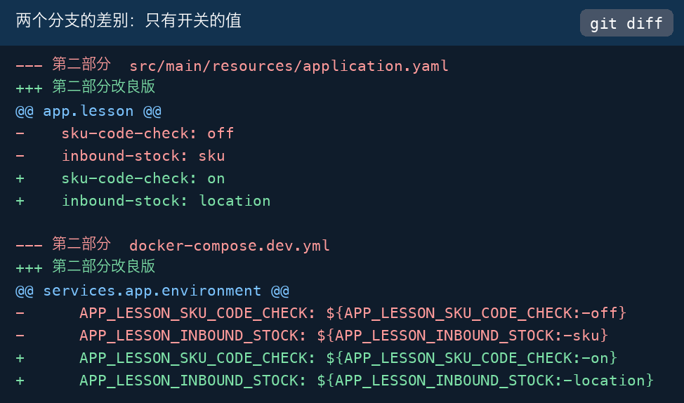
5. 接口一：创建货品
先看库里已经有什么：
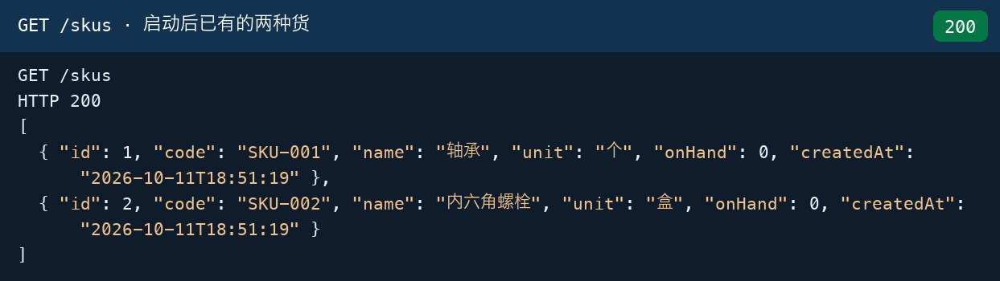
onHand 是 on_hand 列，还没有入库，都是 0。一次创建，三个字段这样走：
| 请求体 | SkuCreateRequest | SkuService.create 参数 | SkuEntity | SQL | sku 表的列 |
|---|---|---|---|---|---|
"code" | code | code | setCode | #{code} | code |
"name" | name | name | setName | #{name} | name |
"unit" | unit | unit | setUnit | #{unit} | unit |
| 没有 | 没有 | 没有 | setCreatedAt(now) | #{createdAt} | created_at |
| 没有 | 没有 | 没有 | 插入后写回 id | 不在列清单里 | id（自增） |
请求体
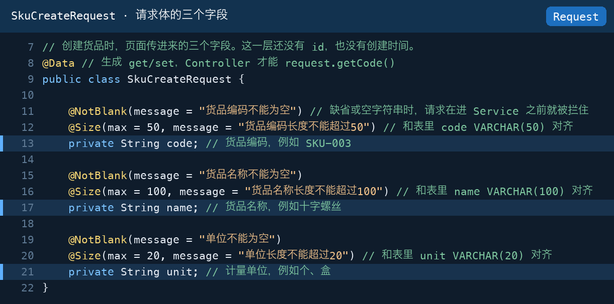
@NotBlank 拦住空编码，@Size(max = 50) 和表里 VARCHAR(50) 对齐。名称、单位同样。这一层没有 id，也没有创建时间。Controller
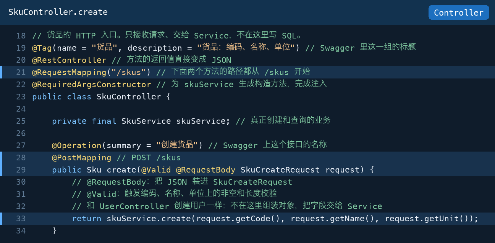
/skus 开始，第 28 行 @PostMapping 就是 POST /skus。第 29 行 @RequestBody 把 JSON 装进 SkuCreateRequest，@Valid 触发上面的校验，校验不过直接 400，进不了 Service。第 33 行把三个字段一个个取出来交给 Service，返回值 Sku 直接变成响应的 JSON。Service
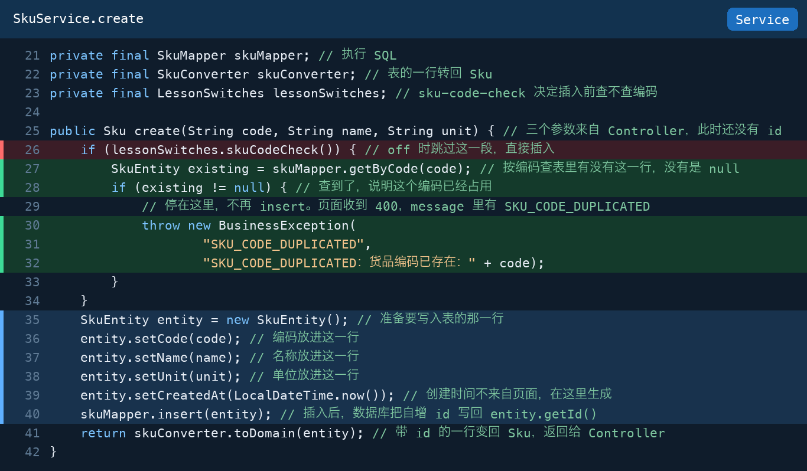
sku-code-check 是 off 时整段跳过，直接到第 35 行（漏洞一，第 10 节）。on 时第 27 行按编码查一次，第 28–32 行查到就抛 SKU_CODE_DUPLICATED，页面收到 400，不再插入。第 35–39 行组装要插入的一行，创建时间在这里生成。第 40 行插入，返回后 entity.getId() 才有值。第 41 行转成 Sku 返回。Mapper
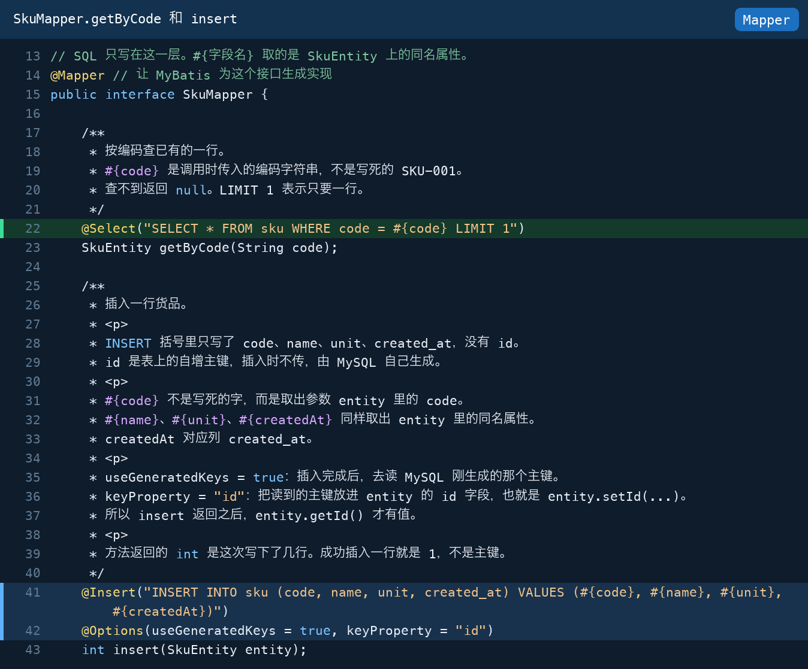
#{code} 是调用时传入的编码，查不到返回 null。LIMIT 1：同一个编码有多行时只拿到第一行（第 10 节会用到这一点）。第 41 行 INSERT 的列清单里没有 id，#{code}、#{name}、#{unit}、#{createdAt} 取 entity 上的同名属性。第 42 行插入后把 MySQL 生成的主键写回 entity.id。insert 返回的 int 是写下了几行，成功是 1，不是主键。结果
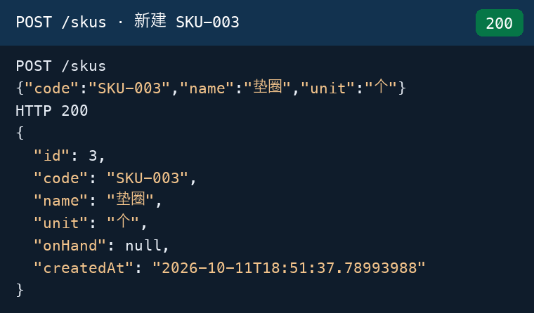
SKU-003 垫圈，id 是 3，是第 42 行写回来的。onHand 是 null：插入时没有设这一列，表里用默认值 0；返回的是插入前组装的那个对象，没有再查一次表。两个分支结果相同。6. 接口二：新建入库草稿
入库分三步：先建一张草稿，往草稿上加行，最后完成。三个接口写在同一个 Controller 里：
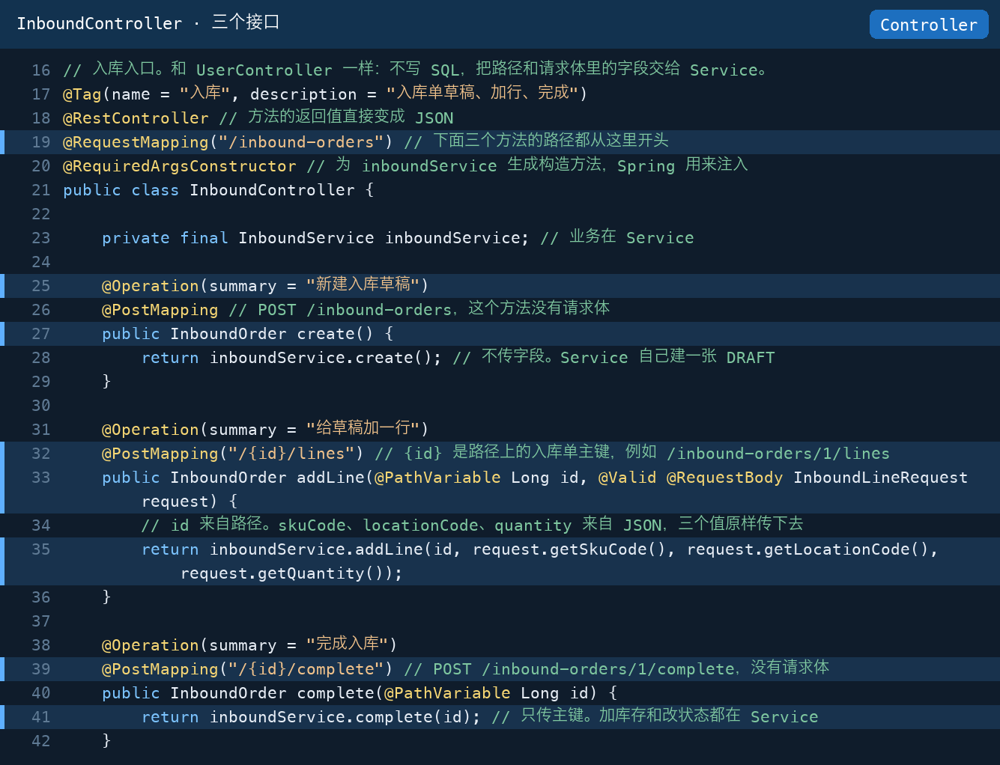
/inbound-orders 开始。第 25–28 行新建草稿：没有请求体，什么也不传。第 32–35 行加一行：{id} 来自路径，三个字段来自 JSON，原样传给 Service（第 7 节）。第 39–41 行完成：只传路径上的主键（第 8 节）。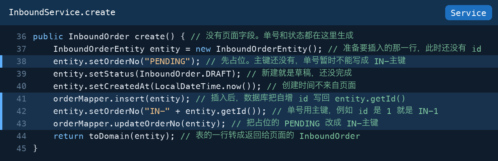
PENDING，第 39 行状态 DRAFT。第 41 行插入，主键写回 entity.getId()。第 42 行单号变成 IN-主键，第 43 行把这一行的单号改掉。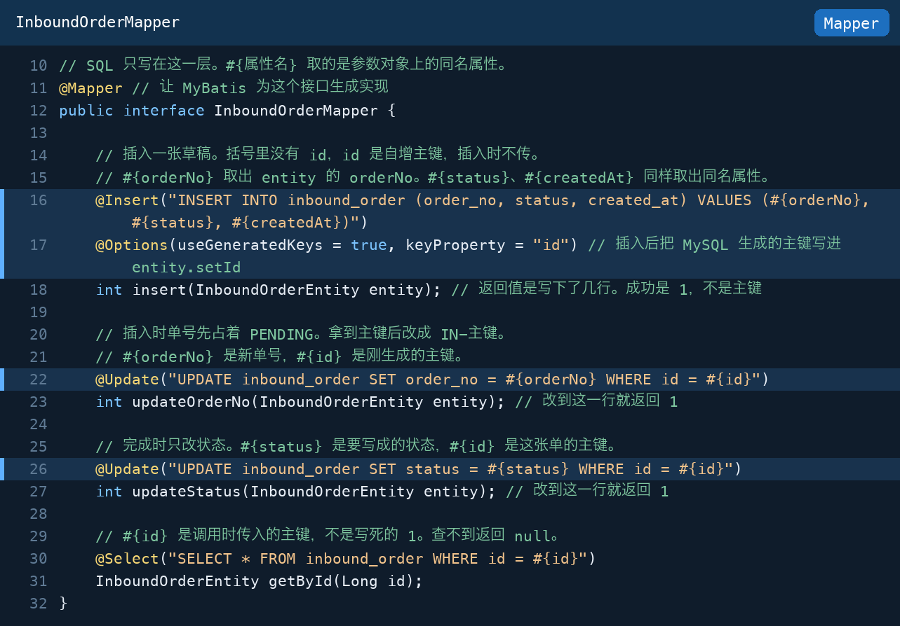
order_no、status、created_at，第 17 行写回主键。第 22 行只改 order_no。第 26 行只改 status，完成入库时用。每个方法返回的 int 都是改到了几行。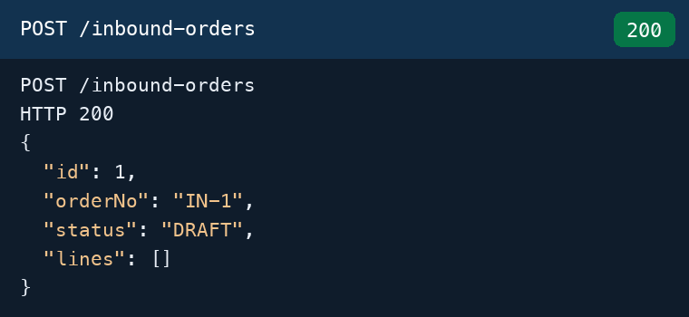
id 1，order_no IN-1，status DRAFT，还没有行。两个分支结果相同。7. 接口三：给草稿加一行
页面上写的是编码，表里存的是主键。编码换成主键发生在 Service：
| 来自 | 值 | Service 里怎么处理 | inbound_order_line 的列 |
|---|---|---|---|
| 路径 | {id} = 1 | requireDraft 查出这张单，不是草稿就拒绝 | order_id |
| JSON | "skuCode": "SKU-003" | skuMapper.getByCode 换成货品那一行，取 id | sku_id |
| JSON | "locationCode": "A-01-01" | locationMapper.getByCode 换成库位那一行，取 id | location_id |
| JSON | "quantity": 10 | 原样 | quantity |
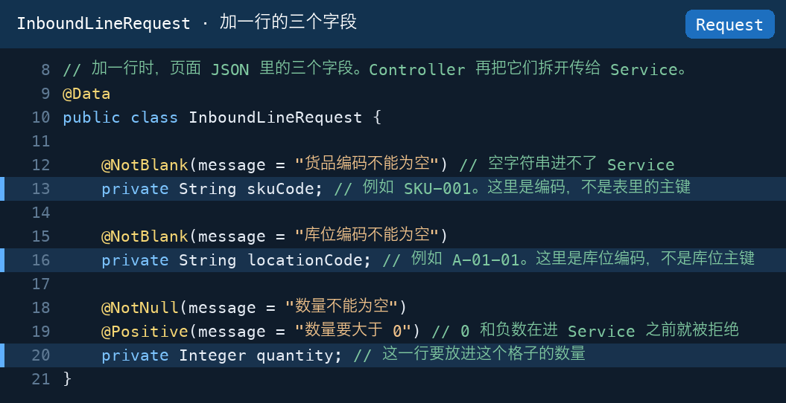
@Positive：0 和负数在进 Service 之前就被拒绝。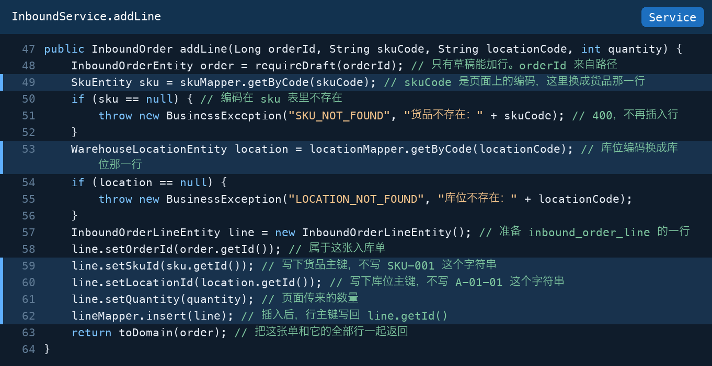
SKU_NOT_FOUND。第 53 行库位编码换成库位那一行。第 58–61 行组装入库行：属于哪张单、货品主键、库位主键、数量。第 62 行插入。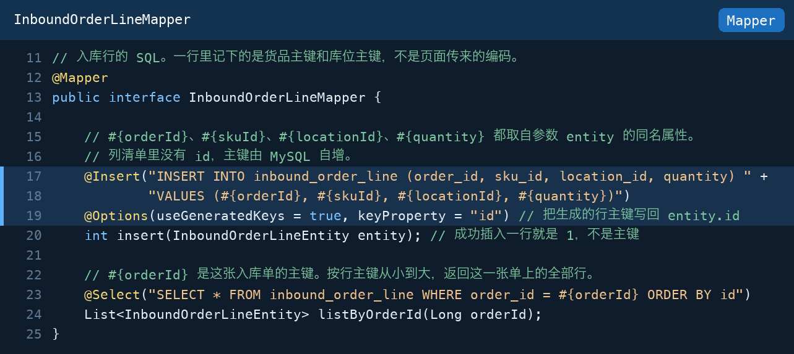
entity 的同名属性。第 19 行写回行主键。第 23 行按单号主键查出这张单的全部行，完成入库时用。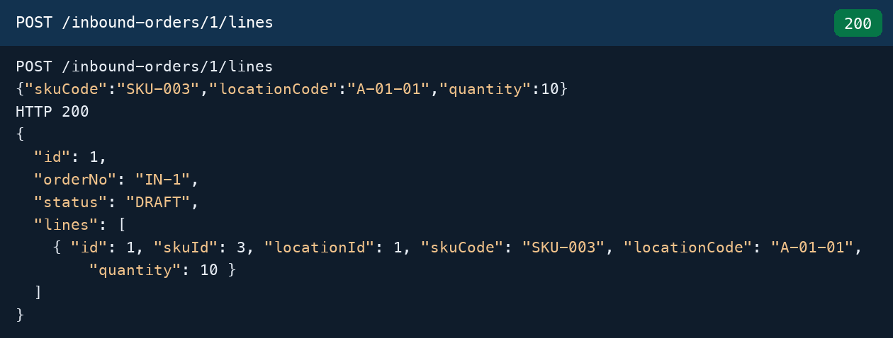
skuId 3、locationId 1 是表里存的主键；skuCode、locationCode 是 toDomain 再用主键查回来的编码。两个分支结果相同。8. 接口四：完成入库
完成时请求里只有入库单主键，数量、货品、库位都从这张单的行上取。两个分支的差别就在「数量记到哪」：
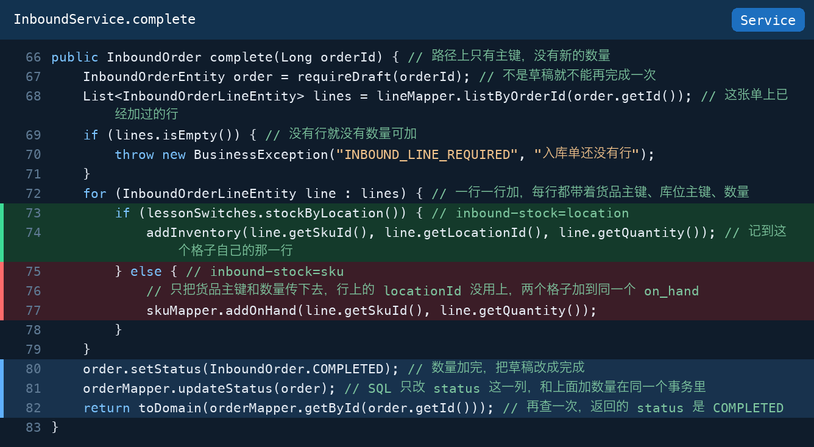
inbound-stock：是 location 时走第 74 行，把三个值都交给 addInventory；是 sku 时走第 77 行，只传货品主键和数量，行上的库位没用上（漏洞二，第 11 节）。第 80–81 行把状态改成 COMPLETED，和上面加数量在同一个事务里提交。第 82 行再查一次返回。漏洞那一侧：加在货品上
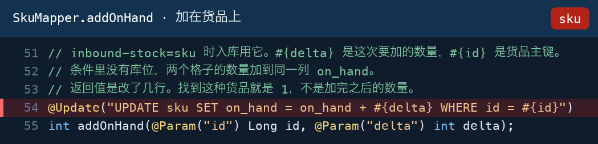
on_hand = on_hand + #{delta}，条件只有货品主键。两个格子的数量加进同一列。返回值是改到了几行，不是加完以后的数。修好那一侧：按格子记账
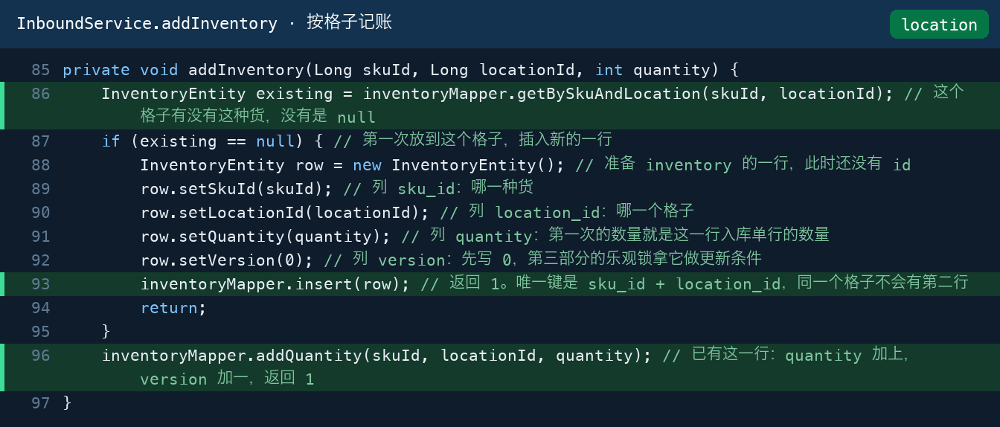
null。第 87–94 行第一次放进这个格子：组装一行，version 先写 0，第 93 行插入。第 96 行已经有这一行：数量加上，version 加一。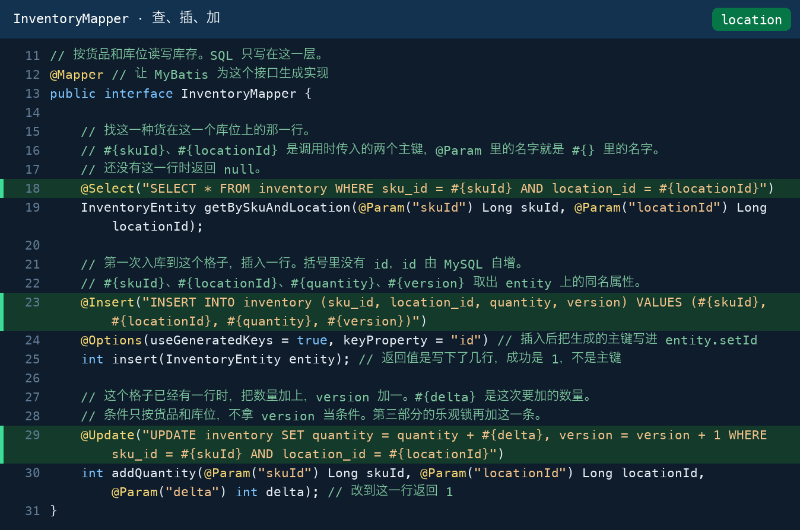
@Param("skuId") 里的名字就是 SQL 里 #{skuId} 的名字。第 23 行插入四列，第 24 行写回主键。第 29 行加数量、version 加一，条件是货品 + 库位。第三部分的乐观锁会在这条 SQL 的条件里再加上 version。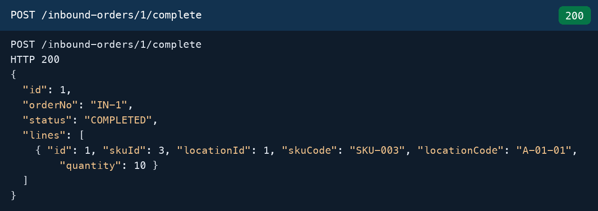
status 变成 COMPLETED。差别不在响应里，在表里：数量记进了哪一列、哪一行。第 11 节到 Adminer 里看。9. 实验顺序
下面的结果都是按这个顺序在两个分支上各跑一遍得到的。应用用 Compose 起在容器里：
docker compose -f docker-compose.dev.yml up -d --build
想让主键和图上一样，先在 Adminer（http://localhost:8081，服务器 mysql，用户 root，密码 root，库 pro_skill）的「SQL命令」里执行：
DELETE FROM sku WHERE code = 'SKU-001' AND id <> 1; DELETE FROM sku WHERE code = 'SKU-003'; ALTER TABLE sku AUTO_INCREMENT = 3; UPDATE sku SET on_hand = 0; TRUNCATE TABLE inbound_order_line; TRUNCATE TABLE inbound_order; TRUNCATE TABLE inventory;
不清空也可以，主键以自己响应里的为准。每个请求都要带登录拿到的 token。
| 步 | 请求 | 第二部分 | 改良版 |
|---|---|---|---|
| 1 | POST /skus {"code":"SKU-003","name":"垫圈","unit":"个"} | 两边一样：200，id 3 | |
| 2 | POST /skus {"code":"SKU-001","name":"轴承","unit":"个"} | 200，id 4，表里两行 SKU-001 | 400 SKU_CODE_DUPLICATED，表里一行 |
| 3 | IN-1：POST /inbound-orders；POST /inbound-orders/1/lines {"skuCode":"SKU-003","locationCode":"A-01-01","quantity":10}；POST /inbound-orders/1/complete | 两边响应一样：200，COMPLETED | |
| 4 | IN-2：同样三步，加的一行是 {"skuCode":"SKU-003","locationCode":"A-01-02","quantity":8} | 两边响应一样：200，COMPLETED | |
| 5 | Adminer 里查 sku 和 inventory | SKU-003 的 on_hand 是 18，inventory 没有数据 | on_hand 是 0，inventory 两行：A-01-01 10、A-01-02 8 |
| 6 | 第二部分：IN-3 新建，加一行 {"skuCode":"SKU-001","locationCode":"B-01-01","quantity":5}，不完成。改良版：IN-3 新建，加一行 {"skuCode":"SKU-003","locationCode":"A-01-01","quantity":5}，完成 | 行上 skuId 是 1，id 4 那一行用不上 | A-01-01 还是一行，数量 15，version 1 |
进第三部分之前
第三部分会给 sku.code 加唯一索引。库里还留着两行 SKU-001 时，第三部分的应用启动会失败。做完实验执行一次：
DELETE FROM sku WHERE code = 'SKU-001' AND id <> 1;
10. 漏洞一：同一个编码记了两次
货品编码是仓库里认货的依据。扫码枪扫出 SKU-001，系统要能找到唯一的那种货。第二部分的创建接口不看编码有没有用过：
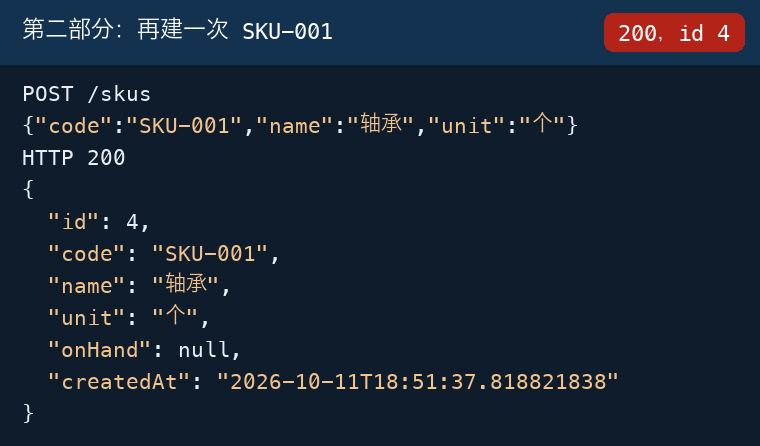
SKU-001，仍然是 200，拿到新主键 4。SkuService 第 26 行开关是 off，查编码那一段整段跳过。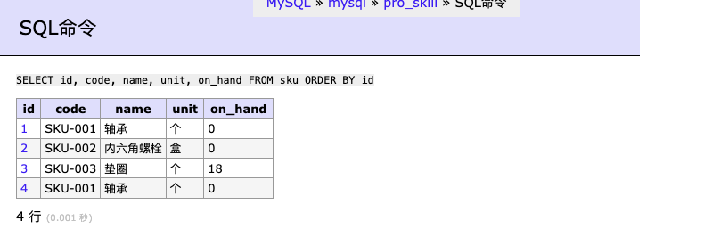
sku：id 1 和 id 4 都是 SKU-001 轴承。表上没有唯一约束（V7 第 4 行），数据库也拦不住。多出来的一行马上带来第二个问题：入库行写的是编码，Service 用编码去找货品，找到的是哪一行？
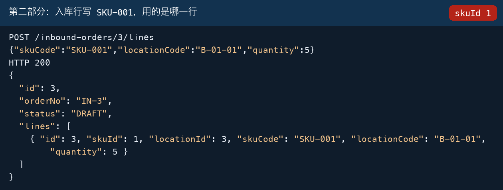
SKU-001，行上 skuId 是 1。getByCode 的 LIMIT 1 只拿第一行，id 4 那一行永远进不了货。两行谁是真的，系统说不清。自己查
- Adminer 里执行
SELECT code, COUNT(*) FROM sku GROUP BY code HAVING COUNT(*) > 1;，有结果就说明有重复编码。 - 对照仓库：V3 的仓库表有唯一约束，
WarehouseService.create插入前也先查了编码。
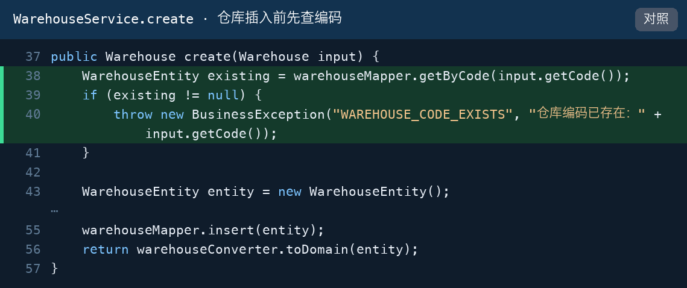
WAREHOUSE_CODE_EXISTS，然后才在第 55 行插入。货品创建少的就是这一段。改良版改了这一块：插入前先按编码查
改良版把 sku-code-check 改成 on，SkuService 第 27–32 行开始执行（第 5 节的 Service 图）。
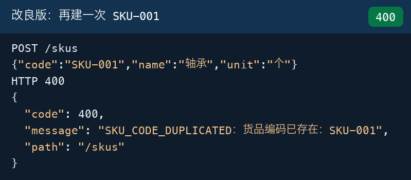
message 是 SKU_CODE_DUPLICATED：货品编码已存在：SKU-001。表里只有 id 1 一行。插入前先查，挡住的是一个人先后提交两次。两个人在同一瞬间提交同一个编码时，两边都可能查到「没有」，再各自插入。这一种要靠表上的唯一索引兜底，第三部分加上（V8）。所以两层都要有：Service 先查，给页面一个看得懂的错误；表上唯一索引，保证并发时也不会有第二行。
11. 漏洞二：入库数量不分库位
入库行上明明写了库位，完成时却只把数量加在货品的合计上：
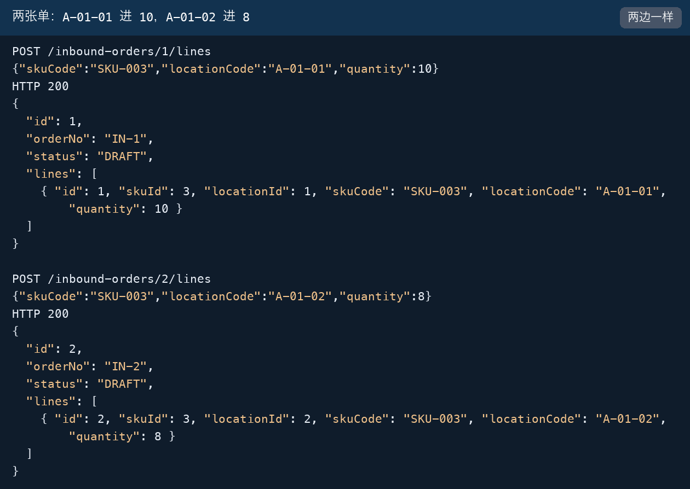
locationId 1）放 10 个垫圈，IN-2 往 A-01-02（locationId 2）放 8 个。两个分支的请求和响应相同。SKU-003 的 on_hand 是 18；inventory 无数据；两张单都是 COMPLETED；入库行上的 location_id 是 1 和 2。问一句：A-01-01 上现在有多少垫圈？表里答不出来，只知道一共 18。拣货员要去哪个格子取货，系统给不出。第三部分做出库，出库单上也写库位，要从那个格子上减，这一步需要每个格子各自的数。
自己查
- Adminer 里看
inbound_order_line：每一行都有location_id。 - 再看
sku.on_hand：只有一个数。说明库位在完成的路上丢了。 - 回到第 8 节的
complete：第 77 行只传了getSkuId()和getQuantity()，getLocationId()没有传下去。
改良版改了这一块：每个格子一行
改良版把 inbound-stock 改成 location，complete 走第 74 行，按货品 + 库位记进 inventory（第 8 节的 addInventory 和 InventoryMapper 图）。同一个格子再入一次，是在那一行上加，不新增一行：
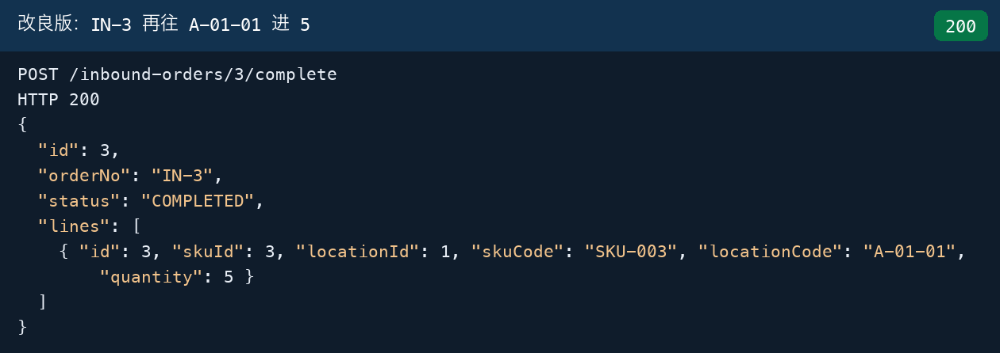
COMPLETED。inventory 两行。location_id 1 上 15 个，version 1，是 10 加 5、改过一次；location_id 2 上 8 个，version 0。sku.on_hand 不再用，都是 0。sku 表里没有第二行 SKU-001。12. 改良版改了哪两块
| 哪一块 | 开关 | 第二部分走的代码 | 改良版走的代码 | 同一个操作的结果 |
|---|---|---|---|---|
| 创建货品 | sku-code-check：off → on | SkuService 第 26 行跳过，直接插入 | 第 27–32 行：先按编码查，查到就抛 SKU_CODE_DUPLICATED | 再建 SKU-001：200、表里两行 → 400、表里一行 |
| 完成入库 | inbound-stock：sku → location | InboundService 第 77 行：sku.on_hand 加上，不分库位 | 第 74 行：inventory 按货品 + 库位各一行 | 10 + 8：on_hand 18 → A-01-01 10、A-01-02 8 |
查货品、新建草稿、加一行，两个分支结果相同。完成入库时，加数量和改状态在两个分支上都是同一个事务里提交。
13. 用测试把两条路径跑一遍
两个测试类把开关写死，测试库是内存里的 H2，每个测试结束后回滚：
| 测试类 | 开关 | 断言 |
|---|---|---|
SkuInboundDefectPathTest | off、sku | 同一个编码创建两次，两次都是 200，表里两行；两个格子各入 10 和 8，on_hand 是 18，inventory 没有行，两张单都是 COMPLETED |
SkuInboundFixedPathTest | on、location | 第二次创建 400 SKU_CODE_DUPLICATED，表里一行；两个格子各一行 10 和 8，on_hand 是 0；同一个格子入两次还是一行，15，version 1 |
./mvnw test -Dtest='SkuInbound*PathTest'
两份测试在两个分支上都能通过：开关写在测试类上，不读 yaml。
14. 把改良版合并进第二部分
第一部分做过一次：自己的仓库里新建分支、推上去、在网页上创建 Pull Request、在网页上点合并。这次用课堂仓库重温，分支已经定好。
仓库地址仍是 https://gitee.com/dingsaier/warehouse-backend.git。源分支是 第二部分改良版，目标分支是 第二部分。讲义两边是同一份，合并带过去的是第 4 节差别图里的四行开关值。教师按下面做，全班看，只合并这一次，不要每人再推一个同名分支。
- GitHub Desktop 里点 Fetch origin，再点 Current Branch，选「第二部分改良版」。这一步是说：接下来要送出去的是改良版。
- 上方是 Push origin 时点它。账号和第一部分一样：用户名是 Gitee 个性地址，密码框粘贴私人令牌。Pull Request 只能合并网上已经有的分支，Push 是把改良版送到 Gitee。
- 浏览器打开仓库，点「Pull Requests」→「新建 Pull Request」。源分支选
第二部分改良版，目标分支选第二部分，标题写「合入第二部分改良版」，点「创建」。文件列表里能看到application.yaml和docker-compose.dev.yml。创建之后，第二部分还没有变。 - 就在这个 Pull Request 页面点「合并」，再确认。网页把改良版的提交接进第二部分。
- GitHub Desktop 里 Current Branch 换成「第二部分」，上方变成 Pull origin 时点它。合并发生在网上，Pull 把它拿到自己电脑上。
application.yaml 第 66–67 行变成 on、location。执行 docker compose -f docker-compose.dev.yml up -d --build app 让应用容器带着新值重建，按实验顺序再跑一遍，结果和这份讲义里的改良版一致。15. 作业里要写同类接口时
把下面这段发给 DeepSeek 或 Kimi。生成后按第 5–8 节检查：请求体里的字段有没有原样走到 Mapper 的 INSERT；Controller 里有没有写 SQL 或者用 builder 组装对象；编码有没有在插入前查重、表上有没有唯一约束；数量有没有按「货品 + 库位」记，并且和单据状态在同一个事务里。
这是 Spring Boot 项目，包名 com.eurasia.pro_skill，MyBatis 注解写 SQL，Flyway 建表。
分层：controller、controller/request、application、domain、entity、mapper、converter。
请按 UserController 的方式写：Controller 把请求体里的字段一个个传给 Service，不要用 builder，不要写 SQL。
1. 货品 sku：编码 code、名称 name、单位 unit，自增 id，created_at。
POST /skus 创建：插入前按 code 查询，已存在就返回 SKU_CODE_DUPLICATED；表上给 code 加唯一约束。
GET /skus 查全部。
2. 入库单 inbound_order：单号 IN-主键、状态 DRAFT/COMPLETED、创建时间。
入库行 inbound_order_line：order_id、sku_id、location_id、quantity。
POST /inbound-orders 新建草稿；POST /inbound-orders/{id}/lines 加一行，
请求体是 skuCode、locationCode、quantity，在 Service 里把编码换成主键再写入；
POST /inbound-orders/{id}/complete 完成。
3. 库存 inventory：sku_id、location_id、quantity、version，唯一键是 sku_id + location_id。
完成时每一行按货品 + 库位记账：没有这一行就插入，有就 quantity 加上、version 加一；
在同一个事务里把入库单改成 COMPLETED。
每一行代码加注释：这个值从哪来、写到哪一列、返回的 int 或 id 是什么。
生成后用一段话说明：一次完成入库请求里，货品、库位、数量依次经过哪些类，落到哪张表的哪一列。
16. 在页面上复现
第 9 节的实验也可以在前端页面上点出来。前端仓库切到「第二部分」分支，npx pnpm@9 dev 启动，打开 http://localhost:5173 登录，左边菜单多了「货品」「入库」两页。后端在「第二部分」和「第二部分改良版」之间切换时，前端不用动：页面一样，点同一个按钮，返回不同。
每页最下面是「接口返回」。每点一次按钮记一条：左边是 HTTP 状态码，后面是调的接口和时间，下面是响应体原文，最新的在最上面。
一个按钮怎样走到 sku 表
第 5 节从 Controller 往下讲过创建货品。这里补上 Controller 之前的两步。
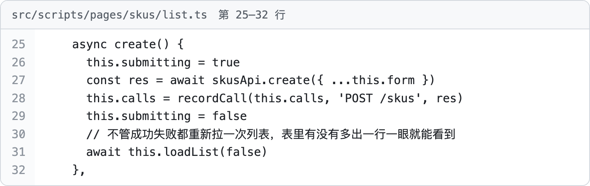
src/scripts/pages/skus/list.ts。点「新建」执行第 25 行。第 27 行把表单里的 code、name、unit 原样交给 skusApi.create。第 28 行把这次的状态码和响应体记进「接口返回」。第 31 行重新拉一次列表，表里多没多一行马上能看到。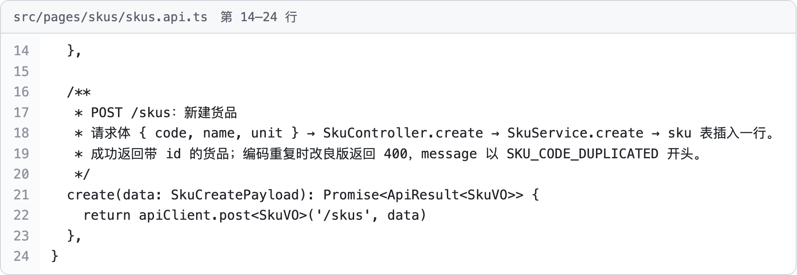
src/pages/skus/skus.api.ts。第 22 行发 POST /skus，请求体就是那三个字段。apiClient 在前面加上 /api，浏览器发出的是 POST /api/skus。Vite 去掉 /api 交给后端，后面就是第 5 节：SkuController.create → SkuService.create → SkuMapper.insert → sku 表的 code、name、unit 三列。第 1–2 步：建货品
货品页默认填好 SKU-003 垫圈，点「新建」。再把编码改成 SKU-001、名称改成轴承，点「新建」。两个分支的结果见开头「先看页面」的重点一。
第 3–6 步：入库
入库页点「新建入库单」，下拉框选货品编码和库位编码，填数量，点「加一行」，再点「完成入库」。上面的表是这个浏览器建过的单，点一行就切到那张单。下面一栏是每个货品的 sku.on_hand，完成入库后自动刷新。两个分支的结果见开头「先看页面」的重点二。
页面上建过的单记在浏览器里（localStorage）。数据库清空以后，点入库页右上角「清空记录」再开始。